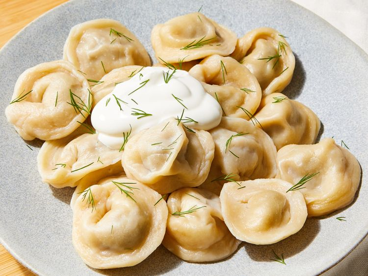

Pelmeni are Russian meat-filled dumplings. Making them is a favorite family pastime during the long winter months. These dumplings are a common convenience food. Large batches can be frozen and quickly boiled or fried on demand. We usually double this recipe in our house and fold about 200 pieces. Pelmeni are usually served with sour cream or vinegar.

Ingredients
1 large egg
1 teaspoon vegetable oil
1 teaspoon salt
0.75 cups warm water, or more as needed
3 cups all-purpose flour
1 tablespoon all-purpose flour for dusting
18 ounces ground beef
1 small onion, chopped
1.5 tablespoons ice-cold water
1 tablespoon coarse salt
freshly ground pepper to taste
Steps
Gather all ingredients
Make dough: Combine egg, oil, and salt in a liquid measuring cup; add enough warm water to fill to 1 cup.
Pour into a large bowl and knead in 3 cups flour until smooth and elastic.
Cover with a dish towel and let dough rest for 30 minutes.
Meanwhile, make filling: Combine ground beef, onion, water, salt, and pepper in a medium bowl; mix thoroughly by hand or using a fork. Set aside.
Dust a baking sheet lightly with 1 tablespoon flour; set aside.
Roll out a portion of dough very thinly on a lightly floured surface; keep remaining dough covered with a dish towel to avoid drying out.
Cut out 2 1/2-inch rounds with a cookie cutter.
Place about 1 teaspoon filling on one side of each dough circle.
Fold dough over and seal the edges using your fingers, forming a crescent.
Join the ends and pinch them together.
Place on the prepared baking sheet. Repeat with remaining dough and filling. Freeze pelmeni for 30 minutes to prevent them from sticking together.
Continue cooking for 5 more minutes.
Transfer to serving plates using a slotted spoon. Serve and enjoy.